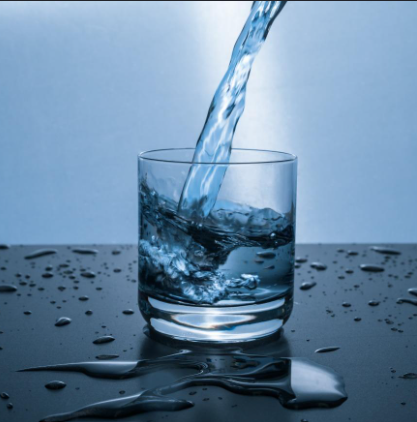

PREVIOUS STUDY
Animated photograph

One subject. Two ways to make it.
COMPARISON 01
Compare the earlier photo-based Pour study with real-time behavior. Move across the live glass to disturb the simulated water.
PREVIOUS STUDY

SPLASH / WEBGPU
Best glass optics, surface detail and photographic realism.
Water reacts continuously to your pointer and the container.
The photograph only simulates subtle motion; Splash reacts but is not yet photorealistic.